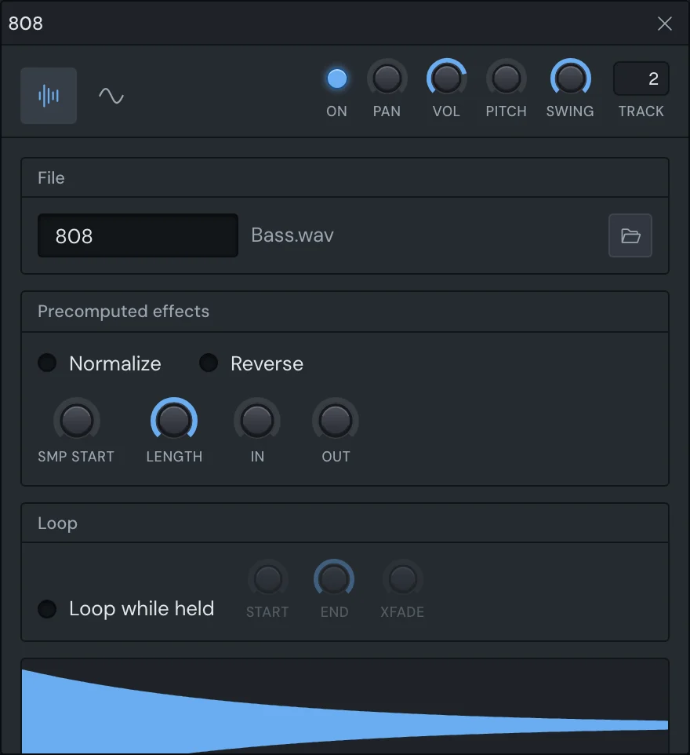
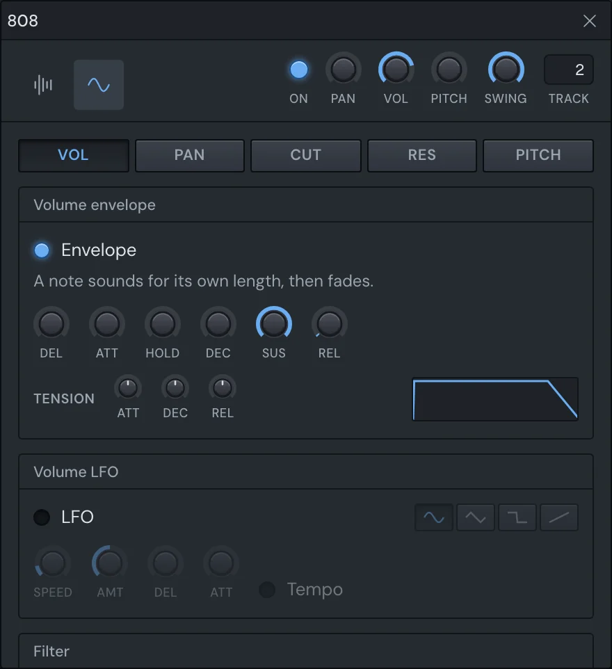

Make
Sampler channels
A sampler channel plays one sample: a drum hit, a vocal chop, a note of a bass. Its settings window is where you trim it, shape it, loop it and give it envelopes, LFOs and a filter. Channels that play the Playlist's audio clips get a smaller version of the same window.
To open it, click the channel's button in the Channel rack, or right-click the button and choose Channel settings…. The window's title is the channel's name.

The controls along the top
These sit at the top right of the window whichever tab is showing.
| Control | What it does |
|---|---|
| ON | Click to mute or unmute the channel. ⌘-click or ⌥-click to solo it. |
| PAN | Where the channel sits left to right. |
| VOL | The channel's volume. |
| PITCH | Moves the sample up or down. Turning it moves by whole semitones; type a value in to set cents. |
| SWING | How much of the song's swing this channel takes. All of it by default; turn it down to keep this channel straight. |
| TRACK | The mixer track the channel plays into. Click the word TRACK to give the channel a free track of its own. |
The song's swing is the Swing knob on the Channel rack's title bar (see Swing).
Turning knobs
Every knob in the window works the same way:
- Drag up or down to turn it. Hold ⌘ while dragging to turn it finely.
- Scroll over it to nudge it.
- ⌥-click or middle-click it to put it back to its default.
- With a knob focused, the arrow keys move it, and with ⌘ more finely.
- Right-click for Reset, Copy value, Paste value and Type in value….
Hover over a knob to read its exact value. PAN, VOL and PITCH can be automated: their right-click menu has Create automation clip too. See Automation.
Load and replace the sample
On the Sample tab, the File section shows the channel's name and its sample's file name. It says No sample when there isn't one, and marks a file that can't be read.
- Rename the channel: type in the name field.
- Load a sample: press the folder button, or choose Load sample… in the channel's menu on the rack.
- Drop one in: drag a file from the Browser, Finder or File Explorer anywhere onto the window. It replaces the sample. Dropping a file on the channel's button in the rack does the same.
Hear it
The waveform at the bottom of the tab shows the sample as it will play, after the precomputed effects, with its loop marked. Press it to hear the channel, or press Enter or Space while it has the focus.
Precomputed effects
These change the sample itself before it plays, so they cost nothing while the song runs. They're worked out in this order: trim, reverse, normalise, fade.
| Control | What it does |
|---|---|
| Normalize | Turns the sample up until its loudest point is at full scale. |
| Reverse | Plays the kept part of the sample backwards. |
| SMP START | Where in the file the sample starts. |
| LENGTH | How much of the file after the start is kept. |
| IN | A fade in, as a share of the part that's kept. |
| OUT | A fade out, as a share of the part that's kept. |
Loop a sample while a note is held
The Loop section is for samplers. Turn on Loop while held and, for as long as a note is held, the sample goes round between its loop points instead of stopping at its end.
| Control | What it does |
|---|---|
| START | Where the loop starts. |
| END | Where the loop ends. |
| XFADE | Crossfades the end of the loop into its start, to hide the join. |
The knobs are greyed while the loop is off. The loop shows on the waveform below.
Envelopes, LFOs and the filter
The Envelope tab shapes how the sample moves while it plays.

Pick what to shape
The buttons along the top pick what the envelope and LFO below it move:
- VOL: volume
- PAN: panning
- CUT: the filter's cutoff
- RES: the filter's resonance
- PITCH: pitch
Each one has its own envelope and its own LFO. Switching between them shows that one's settings.
CUT and RES only move something once a filter is chosen in the Filter section. Until then the tab says so.
The envelope
Turn on the Envelope light for the target you picked. Its knobs follow a note from the moment it starts:
| Knob | What it sets |
|---|---|
| DEL | Delay: how long before the envelope starts. |
| ATT | Attack: how long it takes to rise. |
| HOLD | How long it stays at the top. |
| DEC | Decay: how long it takes to fall to the sustain level. |
| SUS | Sustain: the level it holds while the note goes on. |
| REL | Release: how long it takes to fall away once the note ends. |
| AMT | Amount: how far, and which way, it moves its target. Not on VOL. |
The three TENSION knobs bend the attack, decay and release into curves. The small drawing beside them shows the envelope's shape as you turn them.
The time knobs reach a few seconds when turned. Type a value in for longer.
The volume envelope decides how long a note sounds. With it on, a note plays for its own length, then fades out by its release. With it off, every note plays the whole sample, however short the note is.
The LFO
An LFO moves the target up and down over and over. Turn on the LFO light, then pick a shape: Sine, Triangle, Square or Saw.
| Control | What it sets |
|---|---|
| SPEED | How fast it goes round, in Hz. |
| AMT | How far it moves its target. |
| DEL | How long after the note starts before it begins. |
| ATT | How long it takes to fade in. |
| Tempo | Ties the speed to the song's tempo. SPEED becomes BEATS: how many beats one cycle takes. |
The filter
Choose Low pass, Band pass or High pass to filter the sample, or Off.
- CUT sets the cutoff frequency.
- RES sets the resonance: a peak at the cutoff.
The CUT and RES targets above move these two knobs' values for each note.
Audio clips' channels
Every audio clip on the Playlist plays through a channel of its own kind. They show in the rack under the Audio group. Their settings window is the same, cut down:
- Only the Sample tab: no envelopes, LFOs, filter or loop.
- No SWING knob.
- PITCH makes the clips higher or lower without making them faster. It can't be automated here.
- A Time stretching section, below.
Pressing the waveform plays the file through the channel's mixer track and its effects.
Time stretching
Pick how the clips are stretched to fit the tempo:
- Resample: faster is higher, as a record sped up.
- Stretch: the pitch is kept as the speed changes.
Click the lit mode again to turn stretching off.
TIME shows how long the file is set to last. Click it for its menu:
- Reset pitch, keep speed: back to the pitch it was recorded at, at the speed it plays now.
- None: no stretching.
- Autodetect: works out the file's tempo and fits it to the song's.
- Project tempo: keeps the file sounding as it does now and has it follow the song's tempo from here on.
- Beats / bars: makes the file last that many beats or bars.
- Twice as long and Half as long.
Clips with no stretch of their own play by their channel's. A clip can have its own: see the Playlist.
Plugin channels
A channel playing one of your plugins has the same controls along the top of its window and a Plugin tab instead of Sample and Envelope. Clicking its button on the rack opens the plugin's own window; Channel settings… in its menu opens this one. See Plugins.
Something here wrong or missing? Tell us.